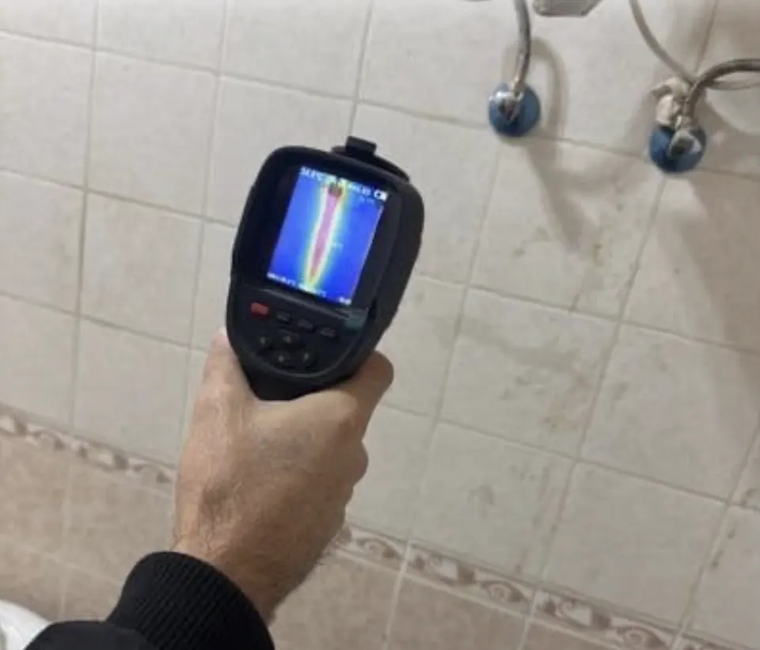
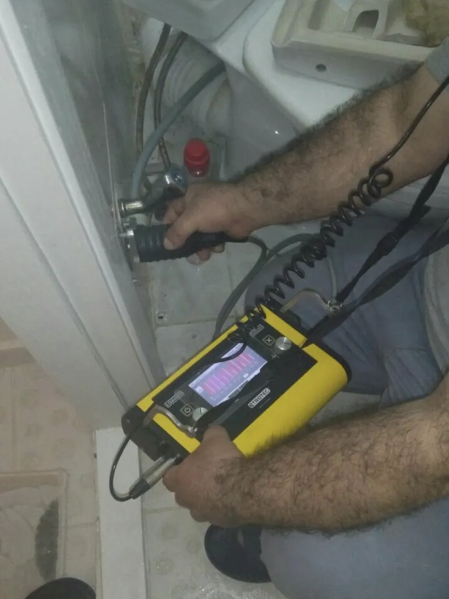
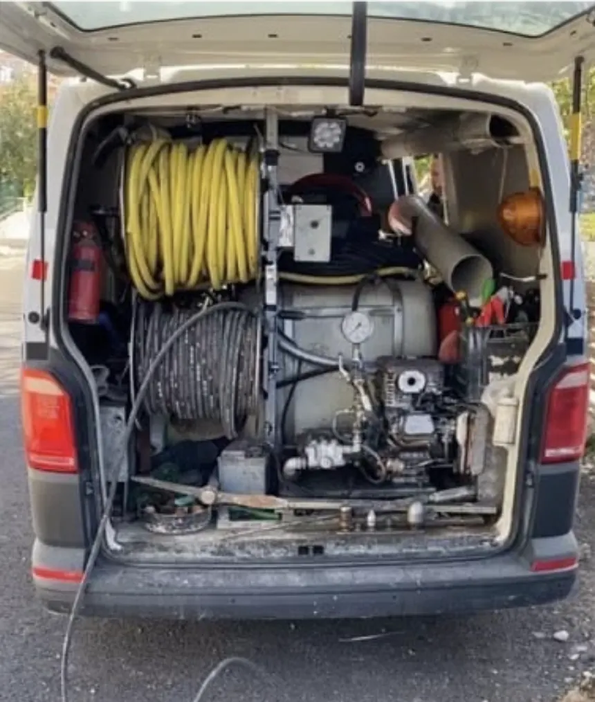

Kartepe, Kocaeli · 7/24
Kartepe Su Kaçağı Tespiti
Duvarın ya da zeminin içindeki su kaçağını kırmadan, görüntülü cihazla buluyor, tamirini de yapıyoruz. Kartepe'de gece ya da gündüz fark etmeden arayabilirsiniz; ekiplerimiz ortalama 30 dakikada yanınızda.

- 7/24 hizmetGece, hafta sonu ve bayramda da arayabilirsiniz.
- Ortalama 30 dakikaKocaeli'de adrese ortalama 30 dakikada ulaşıyoruz.
- Kırmadan, kameralıTıkanıklığın yerini kamerayla görüp kırmadan açıyoruz.
- Ödeme iş bitinceSorun giderilmeden ücret almıyoruz; fiyatı işe başlamadan söylüyoruz.
Kartepe'de su kaçağı tespiti servisine nasıl ulaşırsınız?
Kartepe Başiskele'nin doğusundaki komşumuz; ofisimizden kısa bir yolla geliyoruz. Bize 0535 815 18 04 numarasından 7/24 ulaşabilir ya da WhatsApp'tan yazabilirsiniz. Adresimizi ve yol tarifini iletişim sayfamızda bulabilirsiniz.
Tavsiyemiz: Bütün muslukları kapatıp su sayacına bakın; sayaç dönüyorsa bunu bize söyleyin. Sızıntı hızlıysa ana vanayı kapatın.
Kartepe'de su kaçağı çağrılarında en sık ne görüyoruz?
Kartepe'de villa ve dağ evlerinde kışın donan borular bahar geldiğinde kaçak olarak ortaya çıkabiliyor. Hafta sonu kullanılan evlerde kaçak bazen günlerce fark edilmiyor; eve geldiğinizde duvarda leke ya da zeminde ıslaklık görürseniz beklemeyin. Kaçağın yerini kırmadan bulup tamir ediyoruz.
Kartepe'de Köseköy ve Uzuntarla tarafında son yıllarda yapılmış siteler, Maşukiye ve Arslanbey'e doğru villa, dağ evi ve hafta sonu evleri ağırlıkta.
Eskiyen boru ve bağlantılar
Eski galvaniz borular içten paslanır; plastik boruların ek yerleri de yıllar içinde gevşeyebilir.
Tadilatta zarar gören boru
Duvara çakılan bir dübel ya da fayans değişiminde zedelenen bir boru, aylar sonra kaçak olarak ortaya çıkabilir.
Nem gider hattından geliyorsa hattın içini Kartepe Kameralı Gider Görüntüleme ile görüyoruz.
Kartepe'de su kaçağı tespiti nasıl yapılır? Kırmadan çözüm
Önce sızıntının temiz su hattından mı yoksa gider hattından mı geldiğini ayırıyoruz. Temiz su tarafında termal kamerayla duvar ve zemindeki ısı izine bakıyoruz; sıcak su hattındaki kaçak ekranda net bir iz bırakır. Sızıntı gider hattından geliyorsa hattı kamerayla görüntülüyoruz. Kaçağın yerini kırmadan belirledikten sonra yalnızca o noktayı açıp tamir ediyor, suyu açıp sızdırmazlığı sizinle birlikte kontrol ediyoruz.
Kartepe'de su kaçağı çağrısında önce sızıntının temiz su hattından mı yoksa gider hattından mı geldiğini ayırıyoruz; tespit yöntemini buna göre seçiyoruz.
Kaçağın tamiri
Kaçağı bulduktan sonra açtığımız noktada boruyu ya da bağlantıyı tamir ediyor, suyu açıp sızdırmazlığı sizinle birlikte kontrol ediyoruz.
Faturası birden yükselen evler
Evde görünür bir sızıntı yok ama su faturası birden arttıysa sayaçtan sonraki tesisatta gizli bir kaçak olup olmadığına bakıyoruz.
Termal kamerayla tespit
Sıcak su hattındaki kaçak duvarın ya da zeminin yüzeyinde ısı izi bırakır. Termal kamerayla bu izi görüp borunun geçtiği yolu ve kaçağın olduğu noktayı buluyoruz.
Gider hattındaki sızıntı
Nem temiz su borusundan değil gider hattından geliyorsa hattı kamerayla görüntüleyip çatlak ya da kaçık bağlantıyı buluyoruz.
Kartepe su kaçağı tespiti: sahadan fotoğraflar


Kartepe su kaçağı tespiti fiyatları ne kadar?
Her kaçak farklı olduğu için telefonda kesin fiyat vermiyoruz; video ya da fotoğrafla yaklaşık bilgi verebiliyoruz. Kesin fiyatı usta yerinde gördükten sonra, işe başlamadan söylüyor. Sorun tamamen giderilmeden ücret talep etmiyoruz; ödemeyi işlem tamamlandıktan sonra alıyoruz.
Kaçağın yeri
Duvar içindeki bir boru ile şap altındaki bir boru aynı iş değildir.
Tespit süresi
Sıcak su hattındaki kaçak çoğu zaman çabuk bulunur; soğuk su hattında ve uzun hatlarda tespit daha uzun sürebilir.
Kartepe'de su kaçağı tespiti için belediyeyi aramalı mısınız?
Kartepe'de evinizdeki su kaçağı için belediye ya da İSU ekip göndermez; su sayacından sonraki tesisat mülk sahibinin sorumluluğundadır. Kaçak sayaçtan önce, yani sokaktaki şebeke hattında ya da sayaç bağlantısındaysa İSU'yu ALO 185'ten arayın; sayaçtan sonraysa bizi arayın.
Kaçağın yerine göre kimin sorumlu olduğunu Kırmadan Su Kaçağı Tespiti ve Tamiri sayfamızda tablo hâlinde gösterdik.
Kartepe 7/24 acil su kaçağı tespiti servisi
Su kaçağı beklerken büyür: sızan su duvarı, zemini ve alt kattaki komşunun tavanını ıslatmaya devam eder. Kartepe'de sızıntı hızlıysa önce ana vanayı kapatın, ıslanan yerin yakınındaki prizlere dikkat edin ve bizi arayın. Gece, hafta sonu ya da bayram fark etmez; 7/24 açığız ve aradığınızda en yakın ekip yola çıkar.
Kartepe acil su kaçağı tespiti servis numarası0535 815 18 04Gece, hafta sonu ve bayram dahilKartepe'ye en yakın su kaçağı tespiti servisi hangisi?
Kartepe'ye en yakın su kaçağı tespiti servisini arıyorsanız: ofisimiz komşu ilçe Başiskele'de. Komşu ilçelerde de aynı hizmeti veriyoruz: İzmit Su Kaçağı Tespiti, Başiskele Su Kaçağı Tespiti.
Hangi durumlarda su kaçağı tespiti için aramalısınız?
- Duvarda, tavanda ya da zeminde nem lekesi var ve büyüyor
- Kullanımınız değişmediği hâlde su faturası birden yükseldi
- Alt kattaki komşunun tavanında leke var ya da su damlıyor
- Bir odada sebebi bilinmeyen rutubet ve küf kokusu var
- Bütün musluklar kapalıyken su sayacı dönmeye devam ediyor
Usta gelene kadar ne yapmalısınız?
- Sızıntı hızlıysa ana vanayı kapatın; ıslanan duvarın yakınındaki prizlere ve elektrikli cihazlara dikkat edin.
- Bütün muslukları kapatıp su sayacına bakın; sayaç dönüyorsa tesisatta kaçak var demektir. Ararken bunu söyleyin.
- Duvarı kendiniz açmayın: su boru boyunca ilerleyebildiği için kaçak, lekenin olduğu yerde olmayabilir.
Kartepe'de su kaçağı tespiti hizmeti verdiğimiz mahalleler
Köseköy, Uzuntarla, Maşukiye, Arslanbey ve Uzunçiftlik başta olmak üzere Kartepe'nin tüm mahallelerine su kaçağı tespiti için geliyoruz. Aramada mahalle ve sokak adını söylemeniz ekibi doğru yönlendirmemizi kolaylaştırıyor. Mahallenizi Kartepe mahalleleri listesinde bulabilirsiniz.
Kartepe'de su kaçağı tespiti: sorular ve cevaplar
Kartepe'de su kaçağı tespiti yapıyor musunuz?
Evet. Su kaçağının yerini kırmadan, görüntülü cihazla buluyor, tamirini de yapıyoruz. 7 gün 24 saat arayabilirsiniz.
Evde su kaçağı olup olmadığını nasıl anlarım?
En kolay yol sayaç testi: bütün muslukları ve suyu kullanan cihazları kapatın, sayaca bakın. Sayaç dönmeye devam ediyorsa tesisatta bir kaçak var demektir.
Kaçağı bulduktan sonra tamirini de yapıyor musunuz?
Evet. Açtığımız noktada boruyu ya da bağlantıyı tamir ediyor, suyu açıp sızdırmazlığı birlikte kontrol ediyoruz.
Su kaçağını bulmak için duvar kırılıyor mu?
Hayır. Kaçağın yerini cihazla, kırmadan buluyoruz. Tamir için yalnızca kaçağın olduğu noktayı açıyoruz.
Kartepe'de diğer hizmetlerimiz
Yakın ilçelerde su kaçağı tespiti
Diğer ilçeler: Derince · Gölcük · Karamürsel · Körfez · Su Kaçağı Tespiti
Şu an hizmet veriyoruz · 7/24
Kartepe için usta mı lazım?
7/24 arayabilir ya da WhatsApp'tan fotoğraf, video gönderebilirsiniz.
7/24 arayın0535 815 18 04- Ortalama 30 dakikada adreste
- Fiyat işe başlamadan söylenir
- Kırmadan, gerekirse kameralı